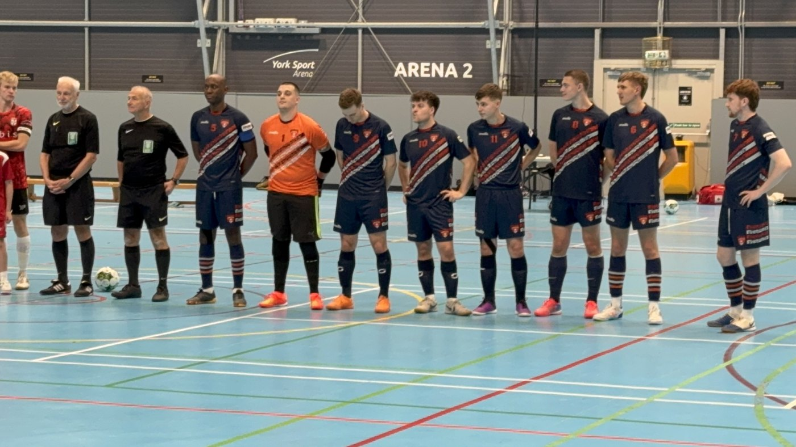

Futsal is the most useful training environment a midfielder can have outside of the eleven-a-side game. Smaller pitch, harder ball, four outfielders, no walls to bail you out. Every touch matters, every decision is under pressure, every duel is physical.
Joe plays as the pivot — the team's furthest-forward player, working with his back to goal. The position rewards exactly the attributes scouts have flagged repeatedly in his football game: physical strength, composure on the half-turn, and two-footed technique. It also demands intelligent positional rotation in possession, and discipline as the team's first line of defence — closing off passing lanes from the front so the structure behind him holds.
What the pivot has to do
The pivot is futsal's central reference point — the most advanced player on the court, working with their back to goal. In possession, the job is to hold off the defending pivot, link play with the rotating midfielders behind, finish in tight spaces, and rotate intelligently when the shape needs to change. Out of possession, the pivot is the team's first line of defence: closing passing lanes from the front so the back three keep their structure intact. There's nowhere to hide on either side of the ball.
Physical Strength
Win the shoulder battle to receive cleanly, hold contact while you scan, roll the defender when the moment opens.
Back-Foot Composure
Receive on the half-turn under pressure. Decide in one touch whether to set, drive or shoot.
Two-Footed Technique
Finishing chances arrive on either side at speed. Bringing the wrong foot loses the moment.
Positional Rotation
Read when to drop, when to spin, when to vacate space so a rotating midfielder can attack it.
First Line of Defence
Close passing lanes from the front. Force play wide. Make the opposition build through the longer route.
Stamina + Repetition
Forty minutes of constant contact and high-tempo work, in and out of possession. The pivot job doesn't pause.
The skills already verified in football carry straight over
At 6'2" and 84kg with an IMTP of 3.30× bodyweight, Joe wins the physical duels that decide futsal pivot play. The shielding, the back-foot receiving, the strength to roll a defender — all flagged in scout reports from his eleven-a-side game — are exactly what the role needs. The difference is the space and the time: futsal compresses both, so the margins are tighter and the contact harder.
The defensive side of the pivot role lands particularly well. He plays as a defensive midfielder in eleven-a-side: screening, closing passing lanes, reading what the opposition wants to do before they do it. Those exact instincts make him a natural fit as the team's furthest-forward defender — applying the same screening intelligence from a different starting position.
What scouts have said about his football game maps directly onto his futsal:
"Receive on back foot well, hold off man, head up to know where to play early or utilises his strength to roll man and play forward."
David Banjura, Former National League Chief Scout
That description IS the pivot role. Same evidence, second sport.
Two films from senior men's futsal
Click either thumbnail to play in place.

Season highlights at pivot
Clips from across the season — receiving under pressure, holding play, finishing in tight space, defensive work as the front of the press.

Full performance vs the league leaders
Joe at pivot against the top team in the league. Same job, highest level of opposition — back to goal, link play, finishing in tight space against the best defending pivot.